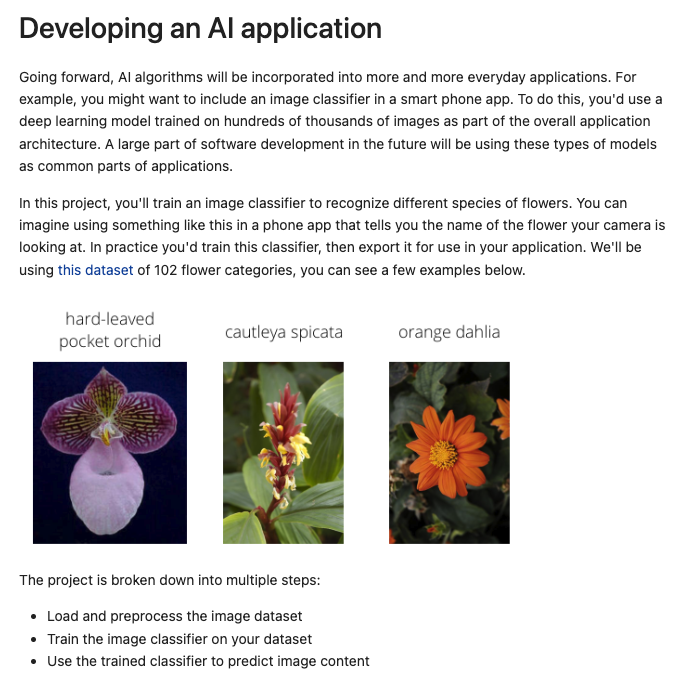
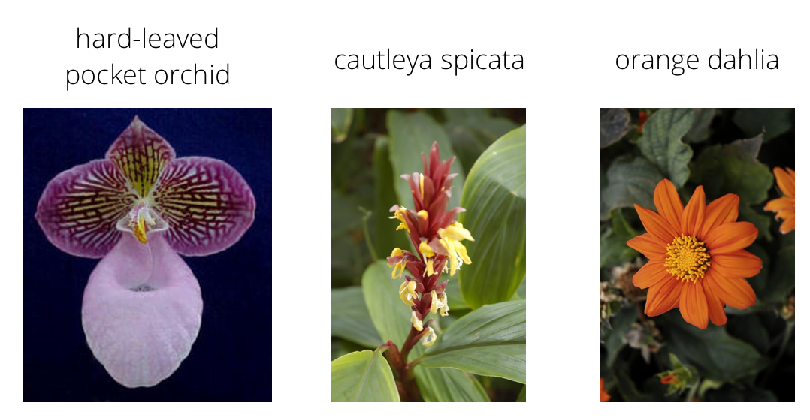
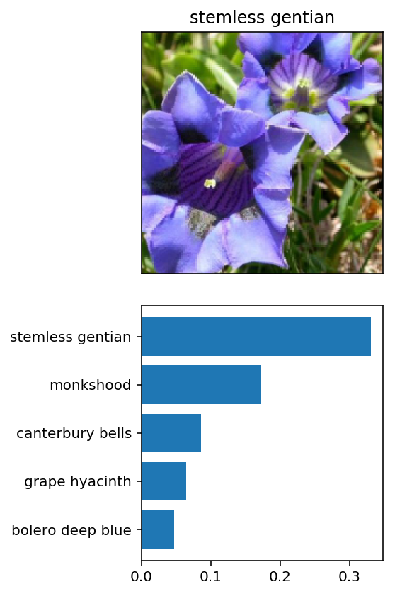

Udacity Nanodegree, Feb 2025
Flower Image Classifier
A deep learning model that recognizes 102 species of flowers, built with transfer learning in PyTorch.
- Type
- Udacity Nanodegree capstone
- Program
- AI Programming with Python
- Dataset
- Oxford 102 Flowers
- Status
- Completed
Overview
An image classifier that identifies 102 species of flowers, built as the capstone project of the Udacity AI Programming with Python Nanodegree. It uses VGG16, pretrained on ImageNet, as a feature extractor, with a custom classifier trained on the Oxford 102 Flower dataset.
Approach
Instead of training a network from scratch, I used transfer learning. The convolutional layers of VGG16 stay frozen and work as a fixed feature extractor, and only the final classifier layers are trained on flowers. Training is fast and accuracy stays strong even on a small dataset.
- Backbone: VGG16 pretrained on ImageNet, with all convolutional weights frozen
- Custom classifier: Linear 25088 to 512, ReLU, Dropout 0.2, Linear 512 to 102, LogSoftmax
- Data augmentation: random resized crop and horizontal flip to reduce overfitting
- Normalization with the ImageNet mean and standard deviation
- NLLLoss with the Adam optimizer (learning rate 0.001), five epochs on a GPU
Command-line interface
Beyond the notebook, the project ships as two standalone scripts.
python train.py flowers/ --arch vgg16 --epochs 5 --gpupython predict.py image.jpg checkpoint.pth --top_k 5 --category_names cat_to_name.jsonWhat I learned
- The full PyTorch training loop: ImageFolder, DataLoader, forward pass, loss, backward pass and optimizer step
- Why transfer learning works: the pretrained network already detects edges, textures and shapes, so fine-tuning only maps them to new classes
- How to save and restore checkpoints, including the class-to-index mapping
- How to turn a Jupyter notebook into reusable command-line scripts with argparse
- The difference between training accuracy and validation accuracy, and why validation is the number that matters
Screens


